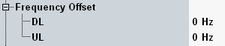

The following parameters configure frequency offset settings.

Sets positive or negative frequency offsets to be added to the specified frequencies.
CONFigure:GSM:SIGN<i>:RFSettings:FOFFset:DL
CONFigure:GSM:SIGN<i>:RFSettings:FOFFset:UL